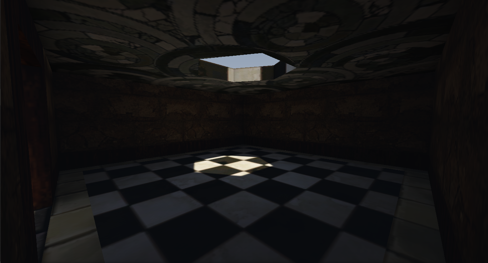
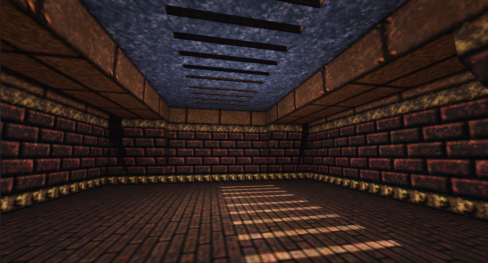

Earlier this week I decided to take another dive into Godot's 3D side. I've been wanting to try my hand at building a "boomer shooter" for a long while, and I figured it would be a pretty simple place to start out. I quickly found out that while Godot 4 brought many new capabilities under the hood, the user experience of level building remained as clunky as ever. What I needed was a dedicated level building tool. Enter This Video by fellow Godot dev Blargis. In the video, he describes his workflow with the Trenchbroom editor, and the Qodot addon for Godot, the combination of which looked just perfect for my needs.
Trenchbroom is at it's heart, a Quake level editor, although technically you can edit maps for Source Engine games just as fluently. People familiar with Half Life or Counter Strike mapping will find it similar to the Hammer level editor used by the Source community. Between the two of them I find Trenchbroom to be slightly more primitive, lacking in native support for things like Displacements and Decals. Personally I prefer the more pared-down tool suite.
Qodot is an addon for Godot that adds the ability to build out .map files into Godot friendly meshes and collision shapes. Qodot can also build .fgd files used by the Trenchbroom editor to allow for Godot Nodes and Scenes to be placed in Trenchbroom directly without having to do any direct work in Godot. Qodot has already been used in a few high profile Godot games, most notably Cruelty Squad.
With the combination of Qodot and Trenchbroom, I was able to get some visually impressive results...
 Despite it's great capability, Qodot has some major usability flaws. The process of bridging the Godot project and Trenchbroom is highly convoluted, and there are several bugs concerning FGDs that make rebuilding maps a hassle. If you know all the proper workarounds, then Qodot is a perfectly useable tool, but for a beginner it is almost impenetrable. The limited information in the official documentations doesn't help in that regard.
Speaking of which, almost all of the official documentation about Qodot is specifically targeted at the Godot 3.x version of the plugin. Most of it is perfectly acceptable, but information about debugging and the setup process were severely lacking. Because of this I was forced to go into the official Discord server, which is where I found...
So as it turns out, Qodot development has actually been inactive for the past few months. A lot of the developers appear to have moved over the the func_godot addon. This addon does more or less the same things as Qdot, but in a more streamlined and user friendly way.